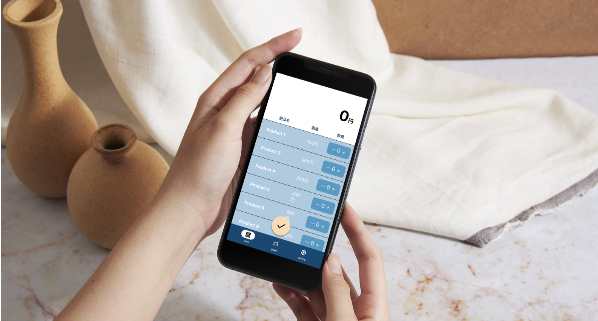

TOROMINOは、発表された面白いものを社会に実装することを目的として活動しているグループです。LifeGameの研究やCAD制作、ドラムアプリの開発、完全木製時計の研究など、多様なプロジェクトを通じて、新しい技術やアイデアの開発に取り組んでいます。個々の研究員が自由に創造的な研究を 進めることで、独自の表現や技術を追求しています。
TOROMINO is a group focused on bringing innovative ideas to society. They work on diverse projects like LifeGame research, CAD design, drum app development, and fully wooden clocks. Each member is free to pursue their own creative research, exploring unique expressions and techniques.

cash register (鋭意製作中)

Manna (鋭意製作中)